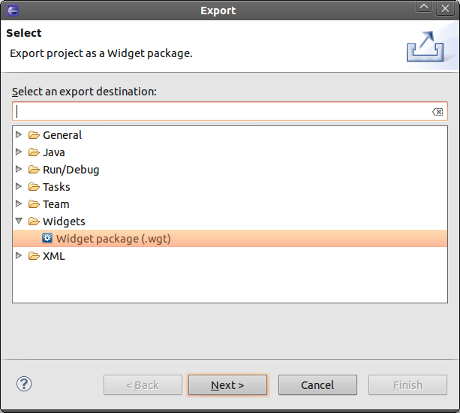
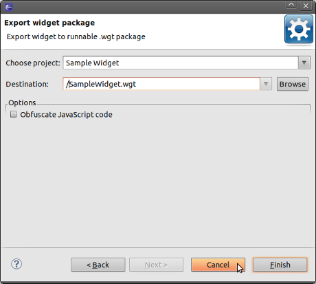

Exporting a widget package
If you want edit an existing widget (.wgt package), you can
import it as a new project.
- To export a widget package into .wgt
file go to File > New > Export
- Choose Widgets/Widget package (.wgt) to open
the Export
Widget wizard.

- Click the Browse button and choose the destination
file. 
- Press the Finish button.